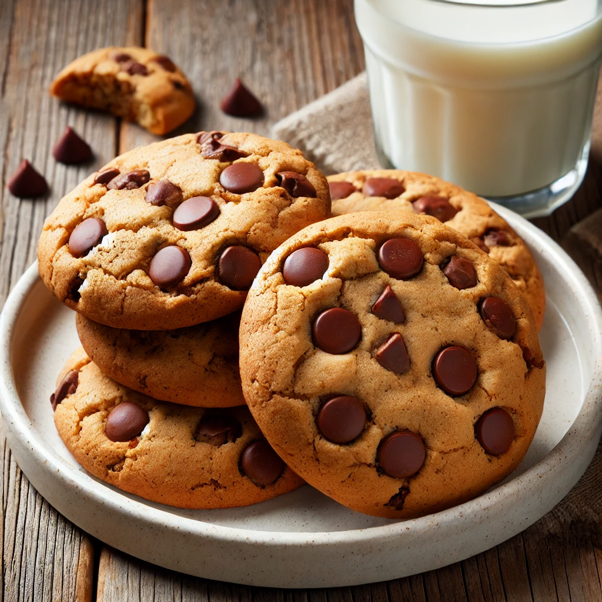

Go back to the homepage
Chocolate Chip Cookies

Chocolate chip cookies are a classic treat, loved for their soft, chewy texture and rich, buttery flavor. Each bite is filled with gooey, melted chocolate chips that perfectly complement the slightly crisp edges and tender center. The balance of sweetness and warmth makes them the perfect homemade dessert.
Ingredients:
- 1 cup (225g) unsalted butter, softened
- 1 cup (200g) brown sugar
- ½ cup (100g) granulated sugar
- 2 large eggs
- 1 teaspoon vanilla extract
- 2 ½ cups (310g) all-purpose flour
- 1 teaspoon baking soda
- ½ teaspoon salt
- 2 cups (340g) chocolate chips
Instructions:
- Preheat the oven to 175°C (350°F) and line a baking sheet with parchment paper.
- Cream the butter and sugars together in a bowl until light and fluffy.
- Add eggs and vanilla, mixing until fully incorporated.
- In a separate bowl, whisk together flour, baking soda, and salt.
- Gradually mix the dry ingredients into the wet ingredients until just combined.
- Fold in the chocolate chips evenly.
- Scoop out dough balls onto the baking sheet, spacing them apart.
- Bake for 10-12 minutes, or until golden brown around the edges.
- Cool for a few minutes before transferring to a wire rack.
Enjoy your soft, chewy chocolate chip cookies! 🍪